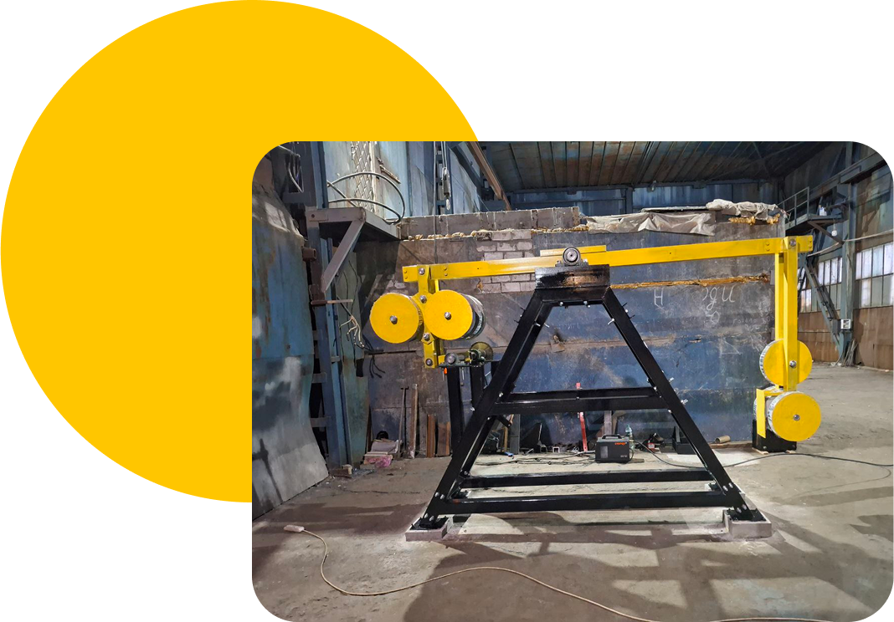

-
Маятник
Дугінця -
Запатентована машина перетворює
коливання маятника в електроенергію. -
Тепер для вас 1 квт=1гривня
-
Ми допоможемо вам заробляти, а не тільки
економити
Перетворення можливо завдяки закону збереження енергії. Тому що вічних двигунів не існує і не може існувати. Вкладена енергія = енергія на виході. В нашому випадку Вкладена енергія = енергія підштовхування маятника(кожен період 24/7) + сила тяжіння. Можна ще розписувати ці сили на складові, але важливо, що Маятник Дугінця працює і виробляє електроенергію дуже дешево. Собівартість виробленої електроенергії менше однієї гривні за один квт. Ця машина як і описано фізикою має великий виграш в силі і великий програш у відстані. Маємо велику амплітуду коливань маятника і дуже малий хід вихідного механізму, маючи багато сили.
-
01
Спочатку енергія вкладається в Маятник Дугінця за допомогою підштовхування кожний період коливань. Коливання маятника змушують інший край коромисла підійматись вверх кожен раз, коли маятник проходить нижню точку своїх коливань. Завдяки особливості конструкції Маятник, який не зв'язаний жорстко з іншими частинами машини, потребує одного і того ж зусилля для підтримування коливань.
-
02
Якщо порівняти цю систему з ,наприклад , зубчатою передачею або ланцюговою, то в них при блокуванні однієї частини механізму блокується все. Тому маятник в цій системі не реагує на можливе блокування будь якої частини всієї машини. Він буде продовжувати свої коливання поки його підштовхують, виробляючи або не виробляючи електроенергію. Тому і зусилля на підтримку коливань одне і теж, з навантаженням чи без.
-
03
Маятник має свій ліміт сили, яку він може передати машині для скоєння роботи. Якщо навантажити другу частину коромисла, на якому з однієї сторони маятник ,а з іншої противага, непід'йомною вагою для конкретного маятника, то робота не буде вироблятись, а маятник буде коливатись з тією ж самою амплітудою та з тим самим зусиллям, якби він підіймав вантаж с другої сторони коромисла.